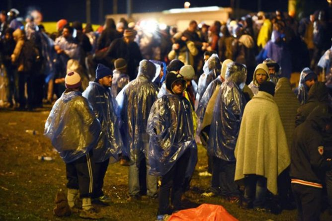
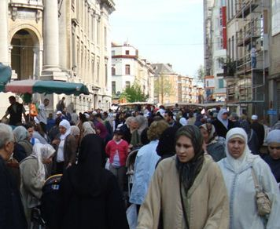
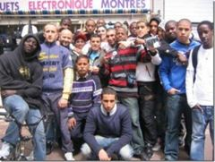
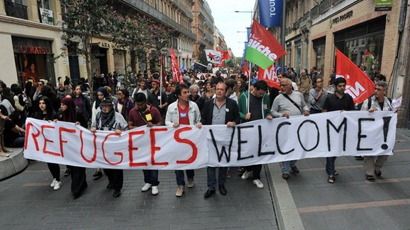

Aucun peuple ne pourrait vivre sans évaluer les valeurs ; mais s'il veut se conserver, il ne doit pas évaluer comme évalue son voisin.
Friedrich NIETZSCHE « Ainsi parlait Zarathoustra »1
L'Europe a cessé d'être un endroit confortable. L'Union européenne moderne rappelle douloureusement en quelque sorte l’URSS tardive. D'une part, la majorité se rend compte que « le navire » navigue dans le mauvais sens avec un besoin urgent de changer de cap ou, a contrario, le flux de migrants en provenance des pays musulmans et le terrorisme islamique submergeront l'Europe. D'autre part, il demeure une confiance due au fait que « le navire » a été initialement correctement conçu et naviguait généralement dans le bon cap libéral, avec une monnaie commune et des frontières ouvertes. On pouvait alors observer quelque chose de semblable dans les dernières années de l'existence de l’Union soviétique. Des gens soutenaient la restructuration (« pérestroïka ») et voulaient changer le système. Mais en même temps, ils tenaient à la mythologie du marxisme-léninisme et de la Révolution d'Octobre, en la considérant généralement comme un fondement historique positif de leur État.
L'Union européenne a été créée comme une union économique parallèle à l'OTAN qui contribuerait à un développement plus efficace des pays non communistes du continent et au dépassement d’une peur et d’une méfiance mutuelle accumulées chez les Européens, en particulier au XXe siècle.
La méfiance n’a pu toutefois être surmontée immédiatement : la France, sous la direction du Général de GAULLE, ayant bloqué l'adhésion de la Grande-Bretagne à l'UE, en craignant que Londres soit le fer de lance de l’UE, mais aussi apporte au projet européen l'influence américaine contre laquelle était catégoriquement Paris2.
Après le départ du Général de GAULLE, le Royaume-Uni s'est néanmoins rallié à l'Union européenne en 1973, mais les Britanniques sont toutefois demeurés la nation européenne avec un sentiment le plus négatif envers de l'UE3. Quand vers la fin des années 1980 Bruxelles a commencé à essayer de rendre le projet européen plus centralisé et à stimuler l'unification du continent non seulement économiquement, mais aussi politiquement4, c’est Margaret Thatcher, le Premier ministre britannique, qui a déclaré : « Il serait hautement préjudiciable de tenter de supprimer la nationalité et de concentrer le pouvoir au centre d’un conglomérat européen ; en outre cela compromettrait les objectifs que nous poursuivons. L’Europe sera plus forte si elle compte précisément en son sein la France en tant que France, l’Espagne en tant qu’Espagne, la Grande-Bretagne en tant que Grande-Bretagne, chacune avec ses coutumes, traditions et particularités. Ce serait de la folie que d’essayer de les faire entrer dans une sorte de portrait-robot européen »5.
Malgré cela, l'UE a poursuivi son expansion au détriment des anciens pays de l'Est. Cette intégration européenne, comme le craignait Thatcher, a vraiment commencé à revêtir un caractère de plus en plus politique et pas seulement économique6. Cela a engendré que de plus en plus des pouvoirs se sont éloignés de la compétence des autorités nationales et sont passés dans la gestion des organes supranationaux situés dans les institutions de Bruxelles. Les États nationaux d'Europe ont ainsi perdu progressivement leur souveraineté. Cette tendance a eu pour cause de provoquer une réaction des forces politiques, principalement situées à droite sur l’échiquier politique et souvent qualifiées du terme générique « d’eurosceptiques ».
Tant que l'Union européenne se développait d’une manière relativement réussie, les eurosceptiques étaient plutôt une force politique marginale, sans être un concurrent pour les grands partis politiques soutenant l'intégration européenne. Début 2008, la crise économique, dont la cause est le fruit d’une série de facteurs internes et externes interdépendants, se répand dans le monde. Le principal facteur interne était la crise de la zone euro associée à divers indicateurs économiques du « noyau » européen représenté par l'Allemagne, la France, la Grande-Bretagne et la Scandinavie, et la « périphérie »7. « Le noyau » européen a alors été contraint de maintenir à flot les pays « périphériques » situés dans l'arc « Atlantique-Méditerranée », de l'Irlande à la Grèce.
Le second facteur est externe. Ainsi, la déstabilisation de la situation, dans la région de la Méditerranée du Sud et de l’Est, a conduit à l'afflux en Europe de migrants économiques et de réfugiés musulmans. A cela l'Europe n’était pas prête. Il ne s’agissait pas seulement d’un problème de garde-frontières mais plus encore d’un problème de gestion des arrivées massives.
Comment le problème de l'intégration des migrants a été géré durant les décennies précédentes dans l'Occident ?8 Jusqu'à la fin des années 1980 ou au début des années 1990 en Allemagne, en France, en Grande-Bretagne et d'autres pays d'Europe occidentale, la politique d'intégration des nouveaux potentiels citoyens arrivants a été relativement réussie. À cette époque, tout d'abord, la pression migratoire était relativement faible. Et d'autre part, le système d'État, en particulier le système de l'éducation et du travail, a été mis en place sur l'intégration des migrants dans la société européenne. Pour devenir un citoyen à part entière, les migrants ont dû faire les efforts d’intégration, d’apprentissage de la langue du pays d’accueil notamment. Et les pays européens les ont aidé dans ce domaine.
Pourquoi le système d'intégration des migrants a-t-il alors commencé à faiblir à partir de la fin des années 1980 ? Tout d'abord, il est lié à l'augmentation des flux migratoires qui est un point fondamental, et d'autre part, à la notion même d'intégration qui a changé et dont les tendances politiques en vigueur ont changé. À cette époque, ce sont les néo-trotskystes et les internationalistes radicaux, de la « génération 68 »9, qui ont participé à des manifestations d'étudiants à Paris et d'autres capitales occidentales sous le slogan « Il est interdit d’interdire ! », ont pris les positions de leader dans l’establishment de leur pays10. Ils sont tous vieillis et ont pour beaucoup obtenus des grades scientifiques, des postes de cadre et pour certains des responsabilités politiques. Leur radicalisme s’est calmé, mais ils ont néanmoins changé une tendance idéologique à l'Ouest, comme MARX pourrait dire, d'une manière capitale. Au lieu de l'intégration, à savoir l'intégration des nouveaux arrivants dans le domaine culturel européen, sont venus les concepts du multiculturalisme, de la tolérance et de la « discrimination positive » des minorités nationales. Les gauches ont progressivement abandonné le concept de lutte des classes, en déclarant au lieu de celle-ci la lutte pour les droits des minorités ethniques, religieuses, de genre et d'autres minorités qui, du point de vue de la « nouvelle gauche », ont toujours été opprimés par l'exploitation impérialiste et capitaliste du monde de l'Occident. Donc, comme l'objet de préoccupation de la part de la « nouvelle gauche », étaient toujours non-blancs et non-chrétiens (et, après une passion par des problèmes du conflit israélo-arabe, encore non-Juifs)11.
 Molenbeek, commune de BelgiqueSelon la doctrine de la « génération 68 », les cultures ne peuvent pas être distinguées en celles « nôtres» et « étrangères », et partout dans le monde, des différentes cultures en tout état peuvent et doivent exister et coexister. Selon ce concept, la notion de « notre » culture ou la culture nationale « dominante » est un vestige du passé colonial et raciste de l'Europe. « La discrimination positive » des minorités nationales en Europe occidentale a atteint un tel succès que, dans la banlieue de Berlin, Paris, Bruxelles ou Stockholm, ils sont devenus une majorité nationale, et en fait, il n’est pas recommandé d’y pointer son nez pour les Européens, y compris pour la police, sans renforcement adéquat12.
La politique de « discrimination positive », de multiculturalisme et de tolérance signifie que même le système d'éducation publique a cessé d'exercer l'une de ses fonctions de base – l’éducation des citoyens loyaux. Dans les écoles françaises ou allemandes, par exemple, s'il y a un pourcentage important d'élèves parlant arabes ou turcs, ils sont unis dans des classes séparées où on embauche des enseignants avec une connaissance des langues correspondantes. Après les leçons les élèves retournent dans les quartiers où vivent principalement leurs compatriotes, regardent la télévision dans leur propre langue, socialisent dans les restaurants qui sont gardés par les mêmes migrants.
De quel type d'intégration peut-on parler à cet égard ? Quelles incitations peuvent être dans les pays ayant le système de soutien social bien développé pour tous ? Comment la société radicalement laïque et séculaire, qui a renoncée la chrétienté en faveur du multiculturalisme érigé en l'état de la doctrine de la religion, peut résister à l'islamisation ? Ces sujets sont considérés par tels auteurs comme Thilo SARRAZIN en Allemagne13, Mélanie PHILLIPS au Royaume-Uni14 et Patrick BUCHANAN aux États-Unis15 dans leurs travaux.
À la fin de 2010 les leaders européens tels que Angela MERKEL, la chancelière allemande, et David CAMERON, désormais l’ancien Premier ministre britannique, ont reconnu que les tentatives pour construire une société multiculturelle dans le continent ont échoué. Cependant, des moyens pratiques pour sortir de cette situation n'ont pas été proposés. Monsieur CAMERON a déclaré la nécessité de recourir au « libéralisme musclé »16 ce qui signifie en fait une continuation de l'ancienne politique non justifiée, mais par des méthodes encore plus forcées. Madame MERKEL a déploré le fait que les migrants ne soient pas particulièrement désireux d'intégrer la société allemande et d'apprendre l'allemand17. Malgré cela, à l’été de 2016, juste après les nouvelles attaques terroristes des islamistes en Europe, la chancelière allemande a confirmé qu'elle continuerait une politique de portes ouvertes aux migrants des pays musulmans18.
Au début des années 90, Samuel, politologue américain, a proposé le concept de « choc des civilisations »19 comme un principe explicatif de l'écoulement de l'histoire après la fin de la Guerre froide. Selon HUNTINGTON, l'effondrement du bloc soviétique et, surtout de l'Union soviétique elle-même, n'a pas rendu le monde plus sécuritaire et plus démocratique.
Le politologue américain n’a pas donné le rôle de premier plan dans le processus global aux idéologies, comme son élève et contradicteur Francis FUKUYAMA20, mais aux civilisations. Aux différents stades de développement, les civilisations peuvent absorber certaines idéologies, les modifier ou les abandonner. Cependant, les civilisations sont beaucoup plus stables dans l'histoire mondiale que les idéologies, qui ont une nature temporaire. Des contradictions de civilisation depuis la fin de la Guerre froide sont non seulement tombées, mais se sont a contrario encore plus aggravées.
HUNTINGTON considère la civilisation islamique comme la plus susceptible d'agression et d'expansion, y compris démographique. Malgré le fait que l'islam n’est pas la religion dominante, des guerres et des conflits armés impliquant des acteurs islamiques prévalent visiblement dans les dépêches de la presse internationale. C’est un paradoxe évidant, étant donné que les médias et les intellectuels dominants ont tendance à désigner les musulmans de l'ex-Yougoslavie ou du Moyen-Orient comme victimes des agressions de leurs voisins.
Avant les années 2000 pour la plupart des Européens, des problèmes du monde islamique étaient étrangers, mais maintenant beaucoup de gens dans l’Occident comprennent une différence entre une burqa et un hijab, ce qui est le salafisme et quelles sont des spécificités de l'abattage halal. Ils le connaissent non pas à cause d'un intérêt particulier pour le sujet musulman, mais en raison de ce qu'ils voient dans les rues de leurs propres villes. Dans ces rues marchent les gauche et antifascistes avec les appels « Les réfugiés, soyez les bienvenues ! » et avec les malédictions contre leurs compatriotes « racistes » inhospitalières.
Selon les manifestants, il n'y a pas de lien entre l'afflux de migrants en provenance d'autres cultures et une augmentation du nombre de crimes violents dans les domaines de leur habitat. Mais dans la radicalisation des musulmans vivant en Europe, ils accusent les Européens, les chrétiens qui ne montrent pas suffisamment de soin aux hôtes pendant le recrutement. Quel scandale, ils préfèrent des gens de leur propre culture et religion21. Cependant, ici il n'y a rien de nouveau. Même dans les années 1960, lorsque aux États-Unis les émeutes de noirs ont fait rage, provoquant des incendies criminels, des pogromes et des assassins de blancs, de nombreux de gauches et libérales intellectuels ont su dénoncer que le « racisme blanc »22.
« Assez ! Trop pour tout supporter ! » – les eurosceptiques ont déclaré. Les eurosceptiques ont vu dans l'Union européenne avec sa capitale à Bruxelles non seulement une structure supranationale rejetant la souveraineté des États nationaux, mais aussi un guide principal de la politique du multiculturalisme et des portes ouvertes qui détruise les fondements chrétiens des pays européens et qui met en péril l'existence de l'Europe comme un conglomérat unique ethnique et culturelle. En fait, les eurosceptiques ne sont pas contre l'Europe, mais au contraire, ils sont partisans de l'Europe, ancienne et traditionnelle. Ils ne voient pas leur idéal dans les États-Unis d'Europe, mais dans une Europe de patries. La bureaucratie bruxelloise est pour eux un symbole de l'anti-Europe et de la concentration de toutes les tendances sociales, politiques et morales les plus destructrices.
Dans les années de 2010, en particulier du fait d’un très grand succès pour les adversaires de Bruxelles aux élections au Parlement européen (2014), et du référendum sur la sortie du Royaume-Uni de l'UE (2016), le phénomène de l'euroscepticisme est sûrement devenu de quasi marginal à la « nouvelle norme » de l'Europe23. Le Général de GAULLE, que de nombreux eurosceptiques considèrent comme la personnification du meilleur européen, a déclaré24 en intervenant à Strasbourg en 1959 : « Oui, c’est l’Europe, depuis l’Atlantique jusqu’à l’Oural, c’est l’Europe, c’est toute l’Europe, qui décidera du destin du monde ! »
S.B.
Références :
1Ницше Ф. Так говорил Заратустра. Книга для всех и ни для кого // Ницше Ф. Полное собрание сочинений: В 13 т. М.: Культурная Революция, 2005-2007. Т. IV. 2007. С. 60.
2Hoffmann, S. The European Community and 1992 (Fall 1989) // Foreign Affairs, July 2016.
3Grant, Ch. What if the British vote no? (May/June 2005) // Foreign Affairs, July 2016.
4Garton Ash, T. Europe’s endangered liberal order (March/April 1998) // Foreign Affairs, July 2016.
5Thatcher, M. Speech to the College of Europe ("The Bruges Speech") // The Margaret Thatcher Foundation. URL: http://www.margaretthatcher.org/document/107332
6Pecastaing, C. Please Leave. Why Brexit would benefit Europe // Foreign Affairs, July 2016
7Kelemen, R.D. Saving the euro, dividing the union. Could Europe’s deeper integration push the United Kingdom out? (January 21, 2013) // Foreign Affairs, July 2016
Partager cette page